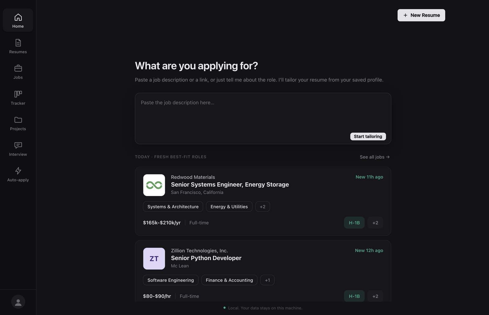
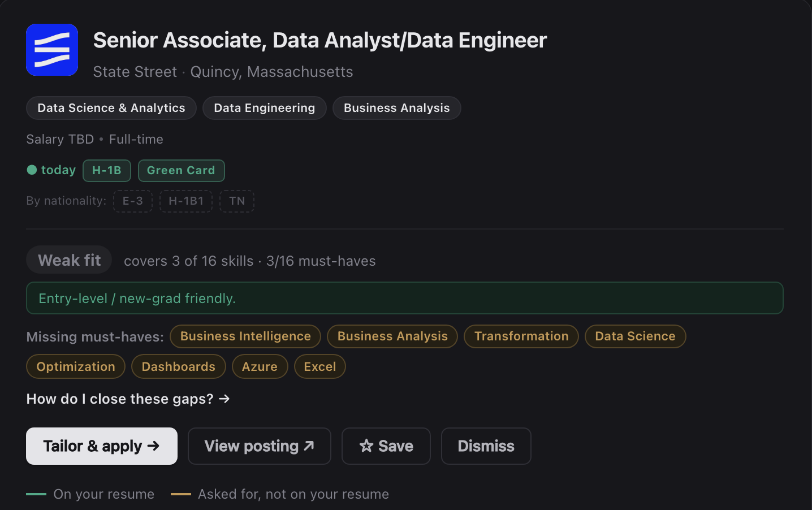

01Find
Only roles at employers with a record.
Jobs come straight from 1,375 employer career sites and applicant tracking systems, refreshed every few hours. Each one carries the employer's sponsorship marks, the pay compared with similar roles, and the visa classes that employer has filed for by nationality.
- FilterSponsorship, entry level, pay, type, posted date. Save a search and get a daily count of new sponsor roles.
- FitOnce your resume is in, every posting shows which of its must-have skills you cover and which you do not.
- HonestPostings that say "no sponsorship" are flagged before you read them.

